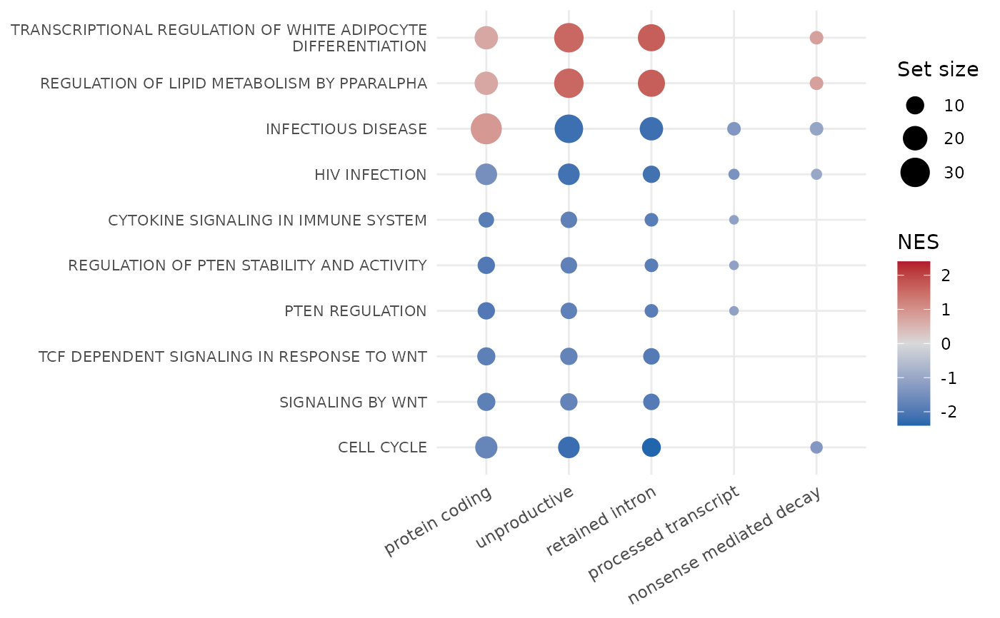

Runs gene set enrichment analysis (fgsea::fgseaMultilevel()) separately
for transcripts of each type, ranking transcripts by log2 fold-change.
Gene sets defined on gene symbols are expanded to all transcripts of
their genes, so each transcript category (protein coding, retained
intron, nonsense-mediated decay, ...) is tested on its own and in the
combined "unproductive" category.
The IsoformicExperiment method uses the stored transcript-level
results and the annotation; the data frame method takes a transcript
table with transcript_name, transcript_type and log2FC columns plus
a tx_to_gene table.
read_gmt() reads gene sets in GMT format into a named list, and
plot_enrichment() draws a dot plot of enrichment results.
Usage
run_enrichment(
self,
genesets_list,
tx_to_gene = NULL,
pval_cutoff = 0.05,
tx_types = NULL,
min_size = 15,
max_size = 500,
...
)
default_enrichment_types(annotation_types = NULL)
read_gmt(path)
plot_enrichment(
enrichment_df,
n = 30,
experiments = NULL,
nes_cutoff = 0,
strip_prefix = "^[A-Z]+_",
label_width = 50
)Arguments
- self
An IsoformicExperiment or a transcript-level DE table.
- genesets_list
Named list of character vectors (gene symbols), as returned by
read_gmt().- tx_to_gene
Data frame with
transcript_nameandgene_namecolumns; required by the data frame method, ignored otherwise.- pval_cutoff
Keep pathways with
pvalat or below this value;NULLkeeps all.- tx_types
Named list defining the transcript categories to test. Defaults to
default_enrichment_types(), which picksprocessed_transcriptorprotein_coding_CDS_not_defineddepending on the annotation version.- min_size, max_size
Minimum and maximum gene set size passed to
fgsea.- ...
Passed on to
fgsea::fgseaMultilevel().- annotation_types
Transcript types present in the annotation, used to choose between
processed_transcriptandprotein_coding_CDS_not_defined.- path
Path to a GMT file.
- enrichment_df
Result of
run_enrichment().- n
Number of top pathways (by adjusted p-value) to show.
- experiments
Categories to show;
NULLshows all.- nes_cutoff
Minimum absolute NES to show.
- strip_prefix
Regular expression removed from pathway names before plotting (default drops MSigDB collection prefixes such as
REACTOME_).- label_width
Pathway labels are wrapped to this many characters.
Value
run_enrichment() returns a tibble with the fgsea columns
plus experiment (the transcript category). read_gmt() returns a
named list. plot_enrichment() returns a ggplot object.
Examples
iso <- example_isoformic()
#> duckdb keeps downloaded extensions and secrets in a temporary directory:
#> ℹ /tmp/Rtmp2Tt1au/duckdb
#> This is removed when the R session ends.
#> • Extensions are re-downloaded each session.
#> • Secrets are lost.
#> ℹ Run duckdb(shared_home = TRUE) (or create ~/.duckdb) to keep them (suitable for most users).
#> ℹ Run duckdb(shared_home = FALSE) to accept the temporary directory (and silence this message).
#> ℹ See ?duckdb_storage for details and alternatives.
#> duckdb keeps downloaded extensions and secrets in a temporary directory:
#> ℹ /tmp/Rtmp2Tt1au/duckdb
#> This is removed when the R session ends.
#> • Extensions are re-downloaded each session.
#> • Secrets are lost.
#> ℹ Run duckdb(shared_home = TRUE) (or create ~/.duckdb) to keep them (suitable for most users).
#> ℹ Run duckdb(shared_home = FALSE) to accept the temporary directory (and silence this message).
#> ℹ See ?duckdb_storage for details and alternatives.
#> duckdb keeps downloaded extensions and secrets in a temporary directory:
#> ℹ /tmp/Rtmp2Tt1au/duckdb
#> This is removed when the R session ends.
#> • Extensions are re-downloaded each session.
#> • Secrets are lost.
#> ℹ Run duckdb(shared_home = TRUE) (or create ~/.duckdb) to keep them (suitable for most users).
#> ℹ Run duckdb(shared_home = FALSE) to accept the temporary directory (and silence this message).
#> ℹ See ?duckdb_storage for details and alternatives.
#> duckdb keeps downloaded extensions and secrets in a temporary directory:
#> ℹ /tmp/Rtmp2Tt1au/duckdb
#> This is removed when the R session ends.
#> • Extensions are re-downloaded each session.
#> • Secrets are lost.
#> ℹ Run duckdb(shared_home = TRUE) (or create ~/.duckdb) to keep them (suitable for most users).
#> ℹ Run duckdb(shared_home = FALSE) to accept the temporary directory (and silence this message).
#> ℹ See ?duckdb_storage for details and alternatives.
#> duckdb keeps downloaded extensions and secrets in a temporary directory:
#> ℹ /tmp/Rtmp2Tt1au/duckdb
#> This is removed when the R session ends.
#> • Extensions are re-downloaded each session.
#> • Secrets are lost.
#> ℹ Run duckdb(shared_home = TRUE) (or create ~/.duckdb) to keep them (suitable for most users).
#> ℹ Run duckdb(shared_home = FALSE) to accept the temporary directory (and silence this message).
#> ℹ See ?duckdb_storage for details and alternatives.
#> duckdb keeps downloaded extensions and secrets in a temporary directory:
#> ℹ /tmp/Rtmp2Tt1au/duckdb
#> This is removed when the R session ends.
#> • Extensions are re-downloaded each session.
#> • Secrets are lost.
#> ℹ Run duckdb(shared_home = TRUE) (or create ~/.duckdb) to keep them (suitable for most users).
#> ℹ Run duckdb(shared_home = FALSE) to accept the temporary directory (and silence this message).
#> ℹ See ?duckdb_storage for details and alternatives.
#> duckdb keeps downloaded extensions and secrets in a temporary directory:
#> ℹ /tmp/Rtmp2Tt1au/duckdb
#> This is removed when the R session ends.
#> • Extensions are re-downloaded each session.
#> • Secrets are lost.
#> ℹ Run duckdb(shared_home = TRUE) (or create ~/.duckdb) to keep them (suitable for most users).
#> ℹ Run duckdb(shared_home = FALSE) to accept the temporary directory (and silence this message).
#> ℹ See ?duckdb_storage for details and alternatives.
#> ℹ This message has been shown 60 times and will not be shown again this session.
gmt <- system.file("extdata", "reactome_subset.gmt", package = "isoformic")
genesets <- read_gmt(gmt)
length(genesets)
#> [1] 40
if (requireNamespace("fgsea", quietly = TRUE)) {
res <- run_enrichment(iso, genesets, pval_cutoff = NULL, min_size = 2)
head(res)
plot_enrichment(res, n = 10)
}
